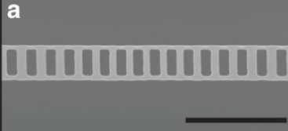

* Currently studying from a scratch; may contain incorrect information. The note was originally written in Korean, and later translated into English.
I. Definition of a Phononic Crystal (PnC)

Image source: Nat. Commun. 5, 5580 (2014)
A phononic crystal is an artificially engineered elastic medium whose mass density
$\rho(\mathbf{r})$ and stiffness tensor $C(\mathbf{r})$ vary periodically with a lattice
vector $\mathbf{R}$.
The small-amplitude elastic-wave equation
$$
\nabla \cdot \left(C(\mathbf{r}): \nabla\mathbf{u}\right)
= \rho(\mathbf{r}) \,\partial_t^2\mathbf{u}
$$
therefore admits Bloch-type eigen-solutions
$$
\bigl[\omega_{n}(\mathbf{k}),\,
\mathbf{u}_{n,\mathbf{k}}(\mathbf{r})=e^{i\mathbf{k} \cdot \mathbf{r}}
\tilde{\mathbf{u}}_{n,\mathbf{k}}(\mathbf{r})\bigr],
$$
with $\tilde{\mathbf{u}}_{n,\mathbf{k}}(\mathbf{r})$ sharing the lattice
periodicity. The resulting dispersion $\omega_{n}(\mathbf{k})$ can
exhibit band gaps—frequency ranges where no propagating phonon mode exists.
The PnC concept is the elastic analogue of photonic crystals in optics and electronic crystals in solid-state physics, but the relevant wavelengths range from nanometers (hypersonic) to centimeters (ultrasonic), enabling chip-scale vibration isolation and wave-guiding.
Band-Gap Formation Mechanisms
Two complementary mechanisms open gaps:
- Bragg Scattering — Destructive interference of
counter-propagating plane waves when the Bragg condition
$2\mathbf{k}\cdot\mathbf{G}=|\mathbf{G}|^2$ is met
($\mathbf{G}$: reciprocal-lattice vector).
Gaps scale roughly with lattice constant $a\!\sim\!\lambda/2$, so miniaturization is required for GHz applications. - Local Resonance — Sub-lattice inclusions with internal resonant frequency $\omega_\text{res}$ hybridize with host modes. Near $\omega_\text{res}$ the effective dynamic mass $m_\text{eff}(\omega)$ becomes negative, opening a sub-Bragg gap even when $a\!\ll\!\lambda$. This permits compact (sub-wavelength) stop-bands.
In practice, modern PnC devices often combine both effects: periodic air-slots (Bragg) etched into a membrane that also supports patterned pillars (local resonators).
II. Defects, Cavities, and Waveguides
Introducing an intentional defect—altering or removing lattice cells—creates localized modes inside the band gap. The defect potential can be modeled by adding a perturbation $\Delta C,\Delta\rho$: $$ \bigl[\mathcal{H}_0 + \lambda\,\Delta\mathcal{H}\bigr]\mathbf{u} = \rho\,\partial_t^2\mathbf{u}, $$ where $\lambda$ tunes the perturbation strength. Solving for eigenvalues with an imaginary wave-vector $k \!\to\! i\kappa$ reveals exponentially localized solutions of the form $\mathbf{u}(\mathbf{r})\!\propto\!e^{-\kappa |x|}$.
Point defects (single-cell modifications) act as phononic cavities and show discrete spectra, whereas line defects (1-D row removal) form band-gap waveguides that support guided modes confined laterally by the gap yet free along the defect axis.
Proper defect design—often via FEM plane-wave expansion or adjoint optimization—enables ultra-high quality factors $Q_i\!>\!10^7$ at hundreds of MHz, vital for quantum acoustics and sensing.
III. Actuation & Coupling Mechanisms
To excite or read out PnC modes one attaches a transducer:
- Piezoelectric (LiNbO3, AlN): RF electrodes drive strain via $d_{33}$ coupling, enabling direct microwave-phonon conversion with interaction rate $g_\text{pe}\!\propto\!|E_\text{RF}\!:\!d:C|$.
- Electrostatic (Si flexures): a DC bias $V_\text{dc}$ + AC drive $V_\text{ac}$ modulate the gap $g$ between beam and electrode, producing a force $F\!\approx\!(\varepsilon_0 A/2) V_\text{dc}V_\text{ac}/g^2$.
- Optomechanical: embedding the PnC in a photonic cavity yields radiation-pressure and photo-elastic couplings $g_0\!=\!\partial\omega_\text{opt}/\partial x$, useful for quantum control at mK temperatures.
Hybrid devices (e.g. LiNbO3-on-Si PnCs clad with superconducting microwave resonators) simultaneously harness piezo- and opto-mechanical effects for coherent microwave-optical transduction.
IV. Characterization Metrics
Ring-down measurements fit the exponential decay $A(t)=A_0\,e^{-t/\tau}$ to extract the total quality factor $Q= \pi f_0 \tau$. Decomposing $1/Q = 1/Q_i + 1/Q_e$ isolates intrinsic loss $Q_i$ from external loading $Q_e$.
Frequency noise in superconducting PnC cavities is often expressed via a dephasing quality factor $Q_\phi\!=\!(\pi f_0 S_\phi)^{-1}$, where the phase-noise spectral density $S_\phi(f)$ shows a 1/$f$ knee set by two-level systems (TLS). Off-resonant TLS mainly broaden $Q_i$, whereas resonant TLS hybridize and split cavity modes—a hallmark observed as doublet peaks when the coupling $g_\text{TLS}\!>\!\gamma$.
Full dispersion and modal profiles are typically simulated via FEM (COMSOL, JCMsuite) or plane-wave expansion, then validated experimentally through laser Doppler vibrometry, heterodyne interferometry, or cryogenic RF spectroscopy.